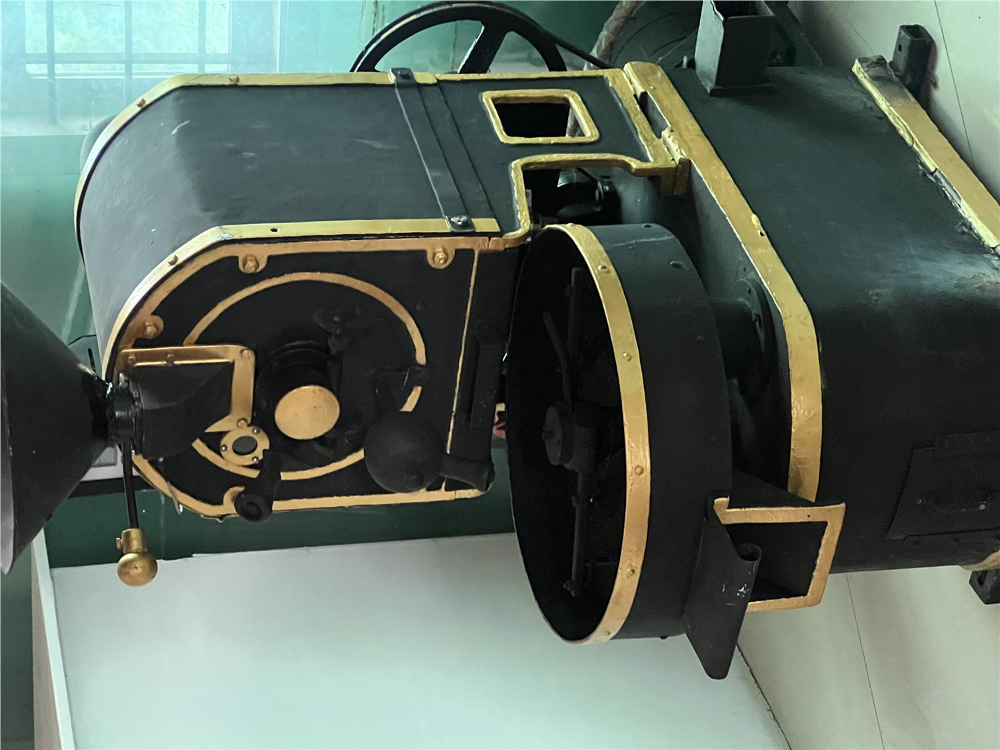

Single Origin Filter Roast
Clean, sweet, balanced. Built for pour-over, immersion, and everyday black coffee.
- Roast
- Light to medium
- Best for
- V60, French press, AeroPress

Karavaloor, Kerala
KoffyKraft sources carefully, roasts in small batches, and helps you brew with confidence. The work is simple on purpose: good coffee, clear information, and enough guidance to make the cup better at home.

Freshness and cup quality matter more than rushing volume.
Indian coffees first, with selected origins beyond India when they make sense.
Every coffee should come with enough guidance to brew it well.
Featured coffees
These cards are the structure for the live coffee list: origin, process, roast style, taste direction, and best brew method. When stock changes, this section can be updated without changing the whole site.
Clean, sweet, balanced. Built for pour-over, immersion, and everyday black coffee.
Round, steady, milk-friendly. A practical roast for espresso, moka pot, and strong milk drinks.
A rotating coffee for people who like origin character, processing detail, and careful tasting.
Roasting process
Every roast starts with the green coffee and the intended cup. We track the roast, taste the result, brew it realistically, and make the next decision from evidence rather than fashion.
Choose coffees with enough traceability, freshness, and cup promise to deserve careful roasting.
Use heat gently and deliberately, preserving sweetness, balance, and the character of the lot.
Cup the roast, brew it for real use, and record what changed in the cup.
Pack and explain the coffee clearly: what it is, when it was roasted, and how to brew it.
Brewing guides
The guides are practical rather than intimidating. Start with your brewer, your grinder, and your taste. Then adjust one thing at a time.
Ratio, grind, water, time, method, extraction, milk, espresso basics, and troubleshooting.
CourseA calm way to learn aroma, sweetness, acidity, body, defects, comparison, and tasting language.
LabConcentrate brewing, dilution, service ideas, and KoffyKraft's recirculating extraction experiments.
Beyond the bean
KoffyKraft also keeps public notes on Buna, Citane, and Living Root Network work. These are not distractions from coffee; they are part of understanding the plant, the farm, and the systems around the cup.